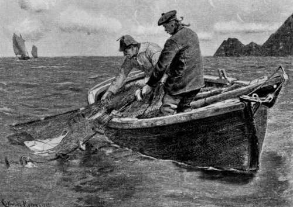
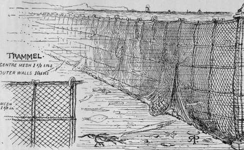
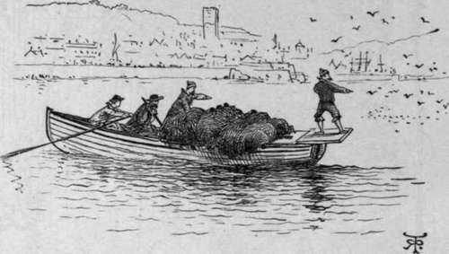
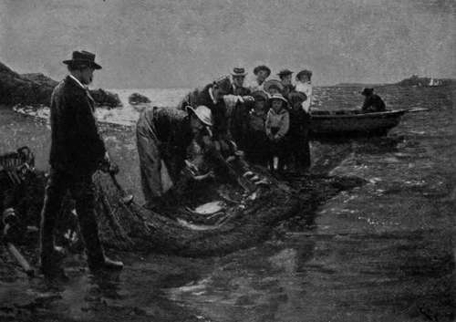

Sea Fishing From Yachts And Large Fishing Boats. Part 10
Description
This section is from the book "Sea Fishing", by John Bickerdyke. Also available from Amazon: Sea Fishing.
Sea Fishing From Yachts And Large Fishing Boats. Part 10
The otter trawl is best let down over the stern of the yacht, which should be sailed in about the same direction as the tide. The sides of the bridle should be paid out over each quarter, and the otter boards will quickly expand the mouth of the net. It is necessary to sail faster than the tidal current, and an otter trawl in particular should not be worked across the tide. It requires far more skill to work than a beam trawl.
Fish, as a rule, lie head to the current, even those which burrow in the sand, such as flat fish, and it is better for the trawl to come on to their noses than on to their tails. If their tails were touched first, many of them would probably swim off in the opposite direction from the trawl ; but on meeting the ground rope they swim up, and the ground rope passes under them.
Professional fishermen often cause their trawls to steer the vessel by making fast the warp to such part of the hull that the pull of the warp nullifies the action of the wind. In a strong wind or bad weather, when the vessel is pitching or travelling too fast, it may be found necessary to place extra weights on the end of the otter boards. Using galvanised iron chain as part of the bridle has the same effect as a chain cable has on an anchor, tending to keep down the warp and make the pull on the boards rather towards the horizontal than the perpendicular. It has been recommended to make fast the warp to the bows of the yacht, bringing the warp down to the stern or other part as may be desired, so that should the trawl catch in anything the warp may be cast off the stern, when the yacht would be at once brought up head to wind. I should think this was a rather dangerous proceeding in bad weather.
Trawling is not often successful during the day in bright weather when the water is fairly calm and clear. At night most fish will be caught, or during the day when the water has been rendered thick by recent storm, or floods coming down the estuary of some river.
The trammel is another net carried by many yachtsmen. It consists of three walls of nets joined to the same head rope and ground rope. The central wall is the deepest and of small mesh —about one and a quarter inch from knot to knot. The two outer walls are of large mesh, twelve inches from knot to knot. The net is about six to eight feet high, and the lower edge of it is weighted to rest on the bottom, the upper edge being floated by means of corks. The inner net of small mesh, which must be made of some fine soft material, is quite double the depth of the outside nets. When fish swim against this apparatus they pass through the big mesh on one side and bring the fine meshed portion through one of the large meshes on the other side, thus making a sort of bag for themselves in which they remain. This will be made clear from the illustration.
A trammel of forty fathoms is the largest size required for all ordinary purposes. One of that size costs about 9 l. It should be set in a line with the tide, and not across it, and is most deadly about dusk. It is usual to set trammels about six or seven o'clock, take them up at nightfall, remove the fish, reset, and leave them till early morning. If they are left too long any fish which are caught are likely to be eaten by cuttle-fish, crabs, etc. These nets are particularly useful for red mullet.
In waters which are not very prolific I have seen fishermen set a trammel net, and row round beating the water with oars. This makes the fish dart about and drives some of them into the net.
Drift and seine nets hardly require lengthy consideration here. The former consist of single walls of nets the under rope of which is leaded, while the head rope is sufficiently buoyed to float on the surface. These nets, which are joined together, making often a length of several miles, drift with the tide, and the shoals of herring, mackerel, or sprats, as the case may be, swim against them in the darkness. The fish mesh themselves, that is to say, they push their heads through a mesh beyond the gills and are unable to withdraw them.
HAULING THE TRAMMEL.
The seine or sean is probably the oldest form of net used, and, it has been suggested, was introduced into Cornwall by the Phoenicians when trading with the West-country folk in the days before Moses existed. There are, broadly speaking, three descriptions of seine nets : (1) the common or deep water seine, (2) the tuck seine, and (3) the ground seine, foot seine, or scringe.
Preparing To Shoot A Deep-Water Seine (penzance).
Every seine consists of a wall of netting the centre portion of which is called the bunt, and is considerably deeper than at the sides, which are termed sleeves or wings. Like the drift nets, this wall of netting is buoyed along the upper edge and weighted beneath so that it retains a vertical position in the water. As in the case of the common seine it does not reach to the bottom, it is only of service in deep water in capturing surface-swimming fish, and a large number of pilchards are caught off the coasts of Cornwall by its assistance, where there is no suitable shore up which the net can be dragged.
The Ground Seine Or Scringe.
The seine is shot in a circle from the stern of the boat, which rows round the spot where the shoal of fish is believed to be. Sometimes two boats start together, going round the circumference of the circle in opposite directions, each shooting a net, and, on meeting, bringing the ends together. Three nets can be used, one acting as a stop net. If the circle to be enclosed is very large, two or even more stop nets which have been joined together are required. When the circle is completed it is diminished by the removal of the stop nets and the ends of the seines are brought together. The seine is then slowly worked towards the shore if possible.
Continue to:
- prev: Sea Fishing From Yachts And Large Fishing Boats. Part 9
- Table of Contents
- next: Sea Fishing From Yachts And Large Fishing Boats. Part 11
Tags
fishing, hooks, bait, fishermen, spanish mackerel, mackerel fishing